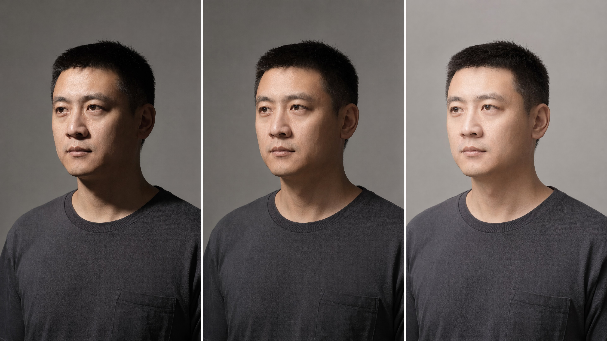
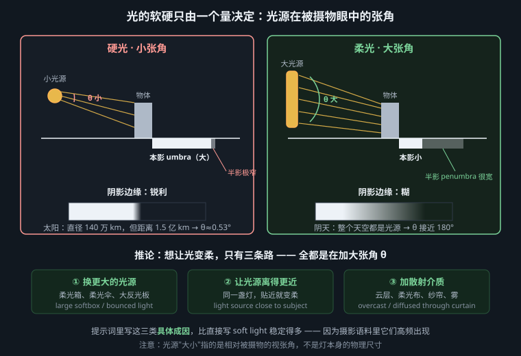
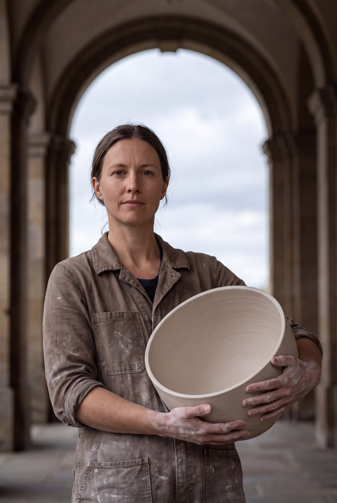
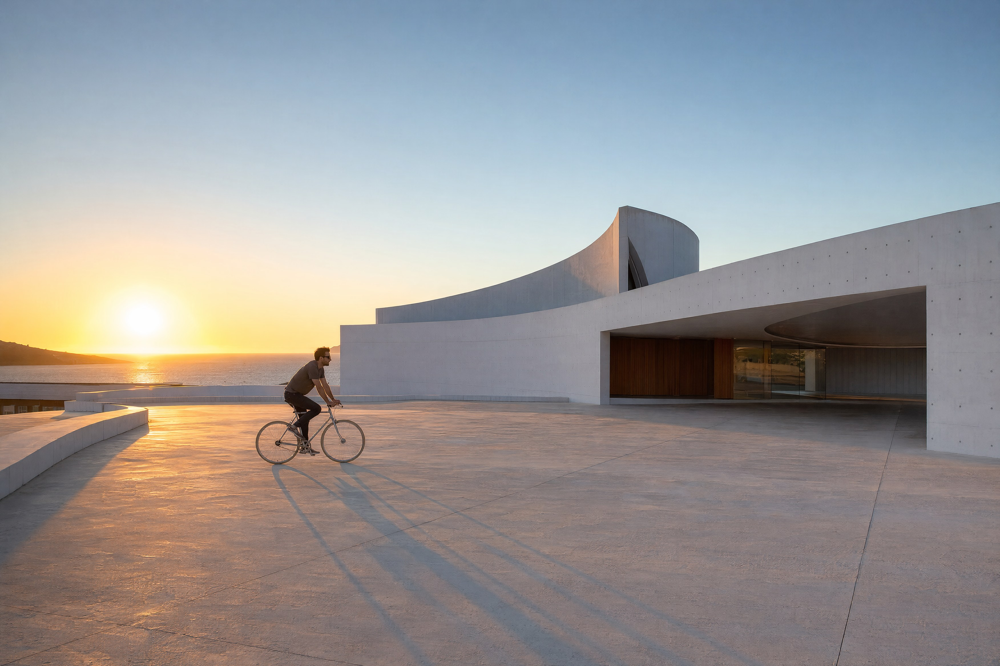

别再把“柔光”当形容词：用光源的视角、形状、光谱与位置，定义可复现的明暗边界

光的软硬不是亮度、色温或灯具名称，而是光源从被摄物位置看去占据的角尺寸（二维时即立体角）。同一只 120cm 柔光箱贴近人脸时覆盖很大的视角，阴影边缘宽；退到十米外，它在人物眼中缩成小亮片，照度虽可用功率补回，阴影仍会变硬。反过来，太阳直径约 139 万公里，却因距离极远，角直径只有约 0.53°，所以晴天直射太阳是硬光。物理直径和距离都只是中间变量，最终裁决者只有角尺寸。
角直径适合描述圆形灯，立体角则适合描述任意发光面。圆盘光源在小角度下的立体角约为 Ω ≈ π(θ/2)²；若把直径加倍而距离不变，它覆盖的立体角约增至四倍。形状也会留下方向性：细长条灯在短轴方向仍像小光源，因此影缘可能一边软、一边相对硬；两个分离的灯即使总立体角很大，也更容易留下两组可辨识的影子，而不是一条连续半影。所谓“包裹感”，实质是发光面跨过主体表面多个法线方向，使更多朝向都能接收到入射光。
若把光源近似为直径 D 的圆盘，光源到遮挡物距离为 L，遮挡物到承影面距离为 z，小角度下光源角直径 θ ≈ D/L（弧度）。由相似三角形，阴影边缘从“光源全被挡住”过渡到“光源完全可见”的半影宽度近似为：
p ≈ z × D / L ≈ z × θ
这条式子同时解释两个现象：光源角度越大，半影越宽；物体离背景越远，背景上的影子越软。太阳的 0.53° ≈ 0.0093 rad，当手离墙一米时，仅由太阳角直径造成的过渡带约为 9.3mm。阴天则不同：发光体不再是太阳圆盘，而是几乎覆盖整个上半球、横跨近 180° 的云层天空，约占 2π sr；来自大量方向的光相互填补阴影，于是半影巨大、边界近乎消失。

站到主体的位置问：光源张开的角度多大？发光面是什么形状？主体离承影面多远？不要先问灯有多少瓦，也不要把“明亮”误写成“柔和”。曝光改变亮暗，角尺寸才改变硬软。
自然光不是一个名为 natural light 的预设。太阳高度、云层与遮挡会同时改变有效发光体、方向和相关色温。下表数值是摄影白平衡的实用范围，不是永恒常数；空气湿度、纬度和地面反射都会让它偏移。
| 自然光 | 约色温 | 硬度与方向 | 可执行提示片段 |
|---|---|---|---|
| 正午直射太阳 | 5000–5600K | 0.53° 小光源，硬；高位单向 | direct midday sun, crisp-edged cast shadows, high overhead direction, 5400K |
| 阴天天空 | 6000–7500K | 近180° 天穹，极软；以上方为主 | fully overcast sky dome, shadow edges nearly absent, cool 6800K skylight |
| 开放阴影 | 7000–10000K | 看不见太阳，只见一侧天空；软而有方向 | open shade facing the northern sky, broad frontal-side skylight, 8200K |
| 窗光 | 5000–7000K | 窗口是有限面积光源；近处软、侧向明确 | daylight through a 2m north-facing window one meter away, rectangular catchlight, 6200K |
| 黄金时刻 | 3000–4500K | 太阳仍约0.53°，本质偏硬；低角度掠射 | low direct sun five degrees above horizon, long crisp shadows, 3800K |
| 蓝调时刻 | 9000–14000K | 太阳已落，天空成大光源；柔和环境光 | post-sunset blue-hour sky dome, soft top-side ambience, 11000K |
注意黄金时刻“暖”不等于“软”。太阳的角直径几乎没变，影缘仍利落；空气散射只是降低照度、抬高红橙比例，近地薄雾才可能进一步降低局部对比。开放阴影也不是无方向：建筑切掉大部分天空后，剩余可见天空就像巨型条形灯。
色温还必须区分“光源颜色”和“成片颜色”。写 8200K skylight 是在描述开放阴影接收到偏蓝的天空光；若相机白平衡也设为8200K，皮肤可能被校正回中性，而同画面里的钨丝灯会显得更橙。反之，把白平衡固定在5600K，开放阴影会保留蓝偏色。提示词若只写 cool mood，模型无法知道应当改变入射光谱、相机白平衡，还是后期调色。更稳妥的写法是分别声明 8200K incident skylight, camera white balance 5600K，并用白墙、灰衣或肤色作为色偏参照。
窗光则要说明窗外看见什么。北向窗只见天空时，是稳定的冷色大面源；阳光直接穿过南向窗时，地面会出现窗格形硬影，此时有效光源又退回0.53°太阳。纱帘只有在被阳光照亮并散射后才成为新的大面源；一句 light through curtains 若不交代太阳是否直射，会在硬窗格影与无影柔光之间随机摇摆。
a ceramic artist holding a pale stoneware bowl, standing under a deep arcade, open shade with no direct sun, facing a broad northern sky opening, soft directional skylight from camera left, 8200K source balanced to neutral skin, matte skin, chalky clay dust and unglazed ceramic, contemporary editorial portrait, restrained natural color, 85mm lens, f/2.8, eye-level camera, waist-up vertical magazine portrait with clean space on the right
模型：FLUX.2 · 1024×1536 · guidance 3.5 · 28 steps。解释：deep arcade 排除直射太阳；broad northern sky opening 同时规定大面积光源与左侧方向；8200K描述入射光谱，而“balanced to neutral skin”规定成片白平衡，避免把人物直接染蓝。陶土、皮肤和哑光器物提供可观察半影的材质基准。

a lone cyclist crossing a white concrete plaza, coastal civic architecture, low direct sun five degrees above the western horizon, hard 0.53-degree source, long crisp cast shadows traveling toward camera, warm 3800K sunlight with cool open-sky fill, slightly rough concrete, brushed aluminum bicycle frame, architectural documentary photography, natural color response, 35mm lens, f/8, camera at chest height, wide 3:2 composition, uninterrupted negative space above the roofline
模型：MJ v8.1 · --ar 3:2 --stylize 80 --chaos 5。解释：five degrees 控制影长与掠射方向，hard 0.53-degree source 阻止模型把“golden”误读成柔焦；冷天光填充与暖直射光并存，才是晴朗黄昏的光谱关系。f/8 与建筑纪实指称保持空间清楚。

人造灯的可靠描述由五件事组成：发光面尺寸与距离、形状、方向、光谱、它在高光和影子里留下的指纹。只写灯名，模型可能调用训练集里最常见的影棚套路；写出指纹，才是在约束成像结果。
指纹必须在材质上有落点。漫反射表面主要显示亮暗渐变与投影边界，镜面材质则直接“映出”发光面的形状：长条灯在汽车漆上成为长线，八角柔光箱在眼睛和金属上成为多边形，环形灯在瞳孔里形成圆环。粗糙表面会把倒影展宽，却不会凭空改变光源方向。因此，提示词可以主动放入一件亮面物与一件哑光物，让模型同时交代高光形状和半影宽度；两者若互相矛盾，说明灯具因果没有建立。
还要区分“控光附件”和“发光面”。束光筒、蜂巢与遮扉主要削减不需要的出射方向，并不会自动扩大角尺寸；它们能让背景变暗、光斑变窄，却常保留硬边。柔光布、反光伞和白墙反弹则可能把光重新分布到更大的表面，真正扩大主体所见的立体角。写 snooted hard spotlight 是一致的，写 tiny snoot creating wraparound softness 则把控光与柔化混为一谈。
| 光源 | 几何与光谱 | 画面指纹 |
|---|---|---|
| 裸灯泡 | 小型近点光源；钨丝约2700K | 硬影、快速距离衰减、亮点高光；透明灯泡可见灯丝 |
| 柔光箱 | 矩形大面源；常见5600K；距离决定角尺寸 | 矩形眼神光、宽半影、面部渐变；近放时包裹感强 |
| 束光筒 | 限制出射角而非自动变软；出口通常很小 | 硬边光斑、局部照明、背景迅速落黑 |
| 环形灯 | 围绕镜头的同轴圆环 | 环形眼神光、正面阴影少，轮廓后方出现近轴光晕影 |
| 霓虹与场景实灯 | 局部彩色线源或面源；常有窄谱 | 灯体过曝、邻近表面同色溢光、颜色随距离迅速衰减 |
| 荧光灯管 | 细长面源；旧灯常有绿峰与频闪差异 | 条形高光、顶光眼窝、偏绿肤色；多管可能形成重影 |
a black glass perfume bottle standing on dark walnut, seamless charcoal studio sweep, a 120 by 180 cm rectangular softbox placed 60 cm camera-left and 30 cm above the bottle, large apparent source, broad highlight running down the glass, soft-edged shadow to the right, 5600K, glossy black glass, sharp silver cap, visible fine walnut grain, controlled commercial still-life photography, realistic studio reflections, 100mm macro lens, f/11, camera level with the label, 4:5 product advertising layout, label fully legible, empty upper-left copy space
模型：Seedream 5 · 2048×2560 · 4:5 · prompt adherence high。解释：柔光箱的尺寸、距离和坐标共同给出立体角与方向；玻璃上的“宽矩形高光”比 soft light 更可验证。f/11 与商摄用途要求瓶身和标签处于同一清晰域。
a night-shift cook wiping a stainless-steel counter in a narrow noodle shop, a red neon sign visible two meters behind him and a green fluorescent tube directly overhead, localized red rim spill from behind, green top light with hard eye-socket shadows, deep neutral gaps between sources, moist skin, greasy stainless steel, chipped glazed tiles, observational night photography, restrained urban color, 40mm lens, f/2, eye-level handheld viewpoint, horizontal narrative frame, both practical fixtures visible and causally matching their color spill
模型：Nano Banana Pro · 1536×1024 · 3:2 · image generation · no reference image。解释：红色来自后方可见霓虹，绿色来自头顶灯管，方向与染色因果一致；deep neutral gaps 阻止模型把双色光平均涂满全场。金属、湿皮肤、釉面砖分别显示条形高光、彩色溢光和局部反射。
做一次最小对照实验：固定模型、种子、主体、镜头与曝光，只替换光的句子。A 组写评价，B 组写装置。A 组的 beautiful soft cinematic light 没有说明光从哪里来、多大、离多远，模型只能回到训练集平均的“柔美女性肖像”；B 组能稳定得到左侧矩形眼神光、鼻影向右、背景照度较低以及可测的宽半影。
比较时不要凭“更好看”投票，而要记录四个可观察量：眼神光或镜面高光的形状、鼻影和投影的方向、影缘从10%到90%亮度的过渡宽度、亮面与暗面的档位差。每组至少生成四张，观察同一约束是否跨种子保留。若B组四张都保留左侧矩形高光，即使人物长相变化，说明几何描述在起作用；若只有一张碰巧符合，就不能把偶然结果当成提示词规律。
亮度也要单独控制。把柔光箱拉远会同时缩小角尺寸并因平方反比而变暗，但实验应通过功率或曝光补偿恢复相同主体亮度，才能证明影缘变化来自角尺寸，而非欠曝。生成模型没有真实功率旋钮，可以补写 subject exposure held constant，并把判断集中在阴影边界和高光形状，而不是直方图总亮度。
A 组：
a tailor examining a navy wool jacket in a gray studio, beautiful soft cinematic light, natural skin, visible wool fibers, editorial documentary portrait, 50mm lens, f/4, eye level, horizontal workshop story frame
B 组：
a tailor examining a navy wool jacket in a gray studio, a 2 by 3 meter diffusion frame one meter camera-left, subject 80 cm from the unlit background, 5600K broad side light, 20 cm facial penumbra, rectangular catchlight, shadow side two stops darker, natural skin, visible wool fibers, editorial documentary portrait, 50mm lens, f/4, eye level, horizontal workshop story frame
模型与参数：FLUX.2 · 1216×832 · guidance 3.5 · 30 steps · 两组使用同一种子。A 只表达偏好；B 分别锁定光源面积与距离、方向、色温、半影宽度、眼神光形状和明暗比。若要调硬，只改扩散框尺寸或距离；若要调对比，只改背景距离或“two stops”，变量彼此独立。
最常见的失败不是词不够多，而是物理条件互相否定。例如：hard direct sunlight, fully overcast 180-degree sky, shadowless face, crisp cast shadow 同时要求小角度直射源、大角度漫射源、无影和硬影。模型不会替你判案，它可能把画面分区拼接：脸像阴天，地面像晴天，眼神光却来自影棚；也可能折中成方向不明的灰光。
错误：a tiny softbox five meters away producing extremely soft wraparound light。在这个距离，tiny softbox 的角尺寸很小，应当偏硬；“extremely soft”与几何相冲突。修复时按发光体几何 → 位置与方向 → 色温/光谱 → 明暗比排序：改成 a 2 by 3 meter diffusion frame 70 cm from the face，再指定左侧、5600K、阴影侧低两档。抽象结果词只用来验收，不要用来推翻装置。
本章的工作原则可以压缩成一句：先描述主体实际能“看见”的发光面，再描述你希望观众看见的效果。角尺寸决定软硬，发光面形状决定高光与眼神光，位置决定影子方向，光谱决定颜色；当这四者因果一致，模型才有机会生成一套可信的光。
镜头运动时，光在画面里的位置可以变，光在世界里的位置不能跟着相机跑。人物从窗前走向室内，窗光应沿面部逐渐退出、投影相对房间保持方向、背景照度按距离变化；如果每一帧都维持同样的“漂亮侧光”，等于一盏不存在的灯黏在脸上。动态光照的机制是把光源写进场景坐标，再描述主体和相机相对它的路径。
| 连续性层 | 镜头表要固定 | 可观察证据 | 允许的叙事变化 |
|---|---|---|---|
| 世界光源 | 窗、太阳、实景灯的坐标、面积、色温 | 投影方向、眼神光形状、可见灯具 | 开关灯、云遮日，但必须有事件触发 |
| 主体路径 | 起点、终点、距灯距离、朝向 | 半影宽度、照度衰减、明暗交界移动 | 人物转身或经过遮挡物 |
| 相机路径 | 轴线、运动方向、焦距变化 | 光源可入画或出画，高光随视角滑动 | 推拉摇移，不改写世界光位 |
生产时给同场景所有镜头复制一段“光源锁”，只替换动作与机位。首尾帧不仅要看人物是否相似，还要核对鼻影、地面投影和镜面高光是否能由同一装置解释。透明玻璃与金属高光会随相机运动，这是正确的视角响应；哑光墙上的投影却不应无故反向。把两类证据分开，才能避免把正常反射误判成闪烁。
[LIGHT LOCK — unchanged across shots] a two-meter north-facing window on world-left, 6200K broad source, one unlit tungsten practical on the rear wall, no frontal fill, cast shadows travel toward world-right; room exposure held constant; [SHOT STATE] the actor walks from 0.5m to 3m away from the window while turning clockwise, camera dollies backward on the same side of the axis, 50mm, six seconds, window highlight gradually leaves the face, no light attached to the camera
整帧忽明忽暗通常是自动曝光漂移，先锁定中灰与亮部上限；影子左右反转是世界坐标或越轴未声明，补光源平面图与屏幕方向；高光像贴纸闪烁则多半是材质粗糙度、灯形或相机路径不稳定。不要用“consistent lighting”笼统补救，它没有因果信息；应指出哪盏灯、哪件材质、哪条轨迹必须连续。